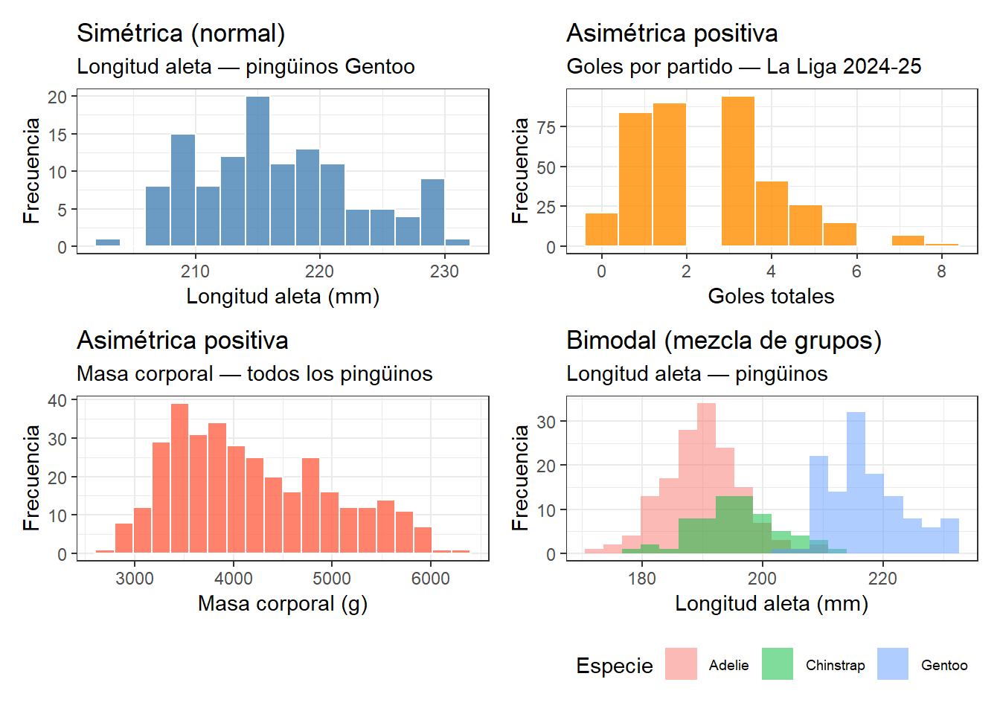
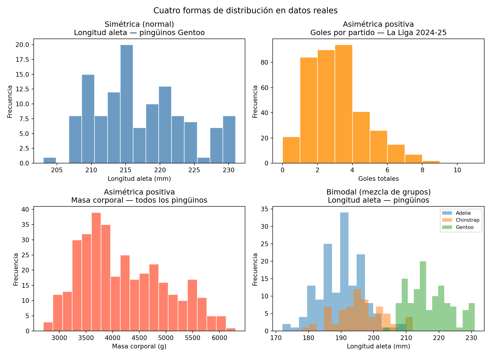
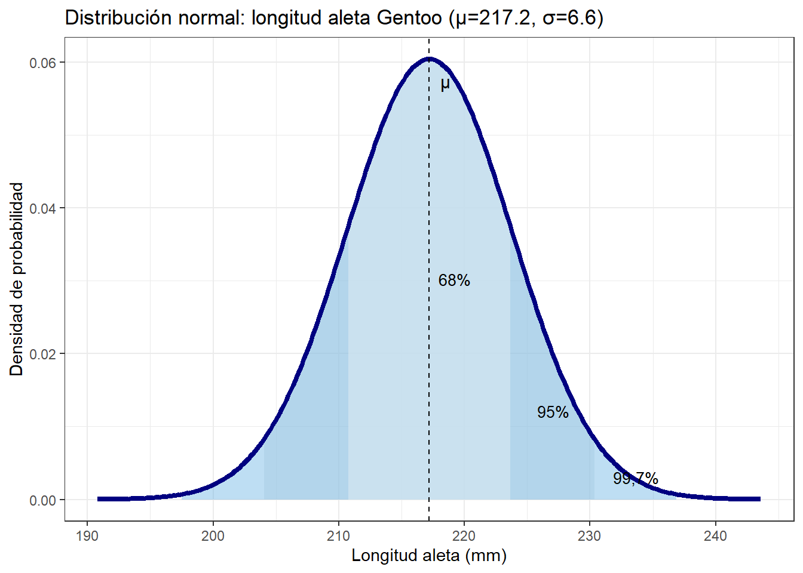
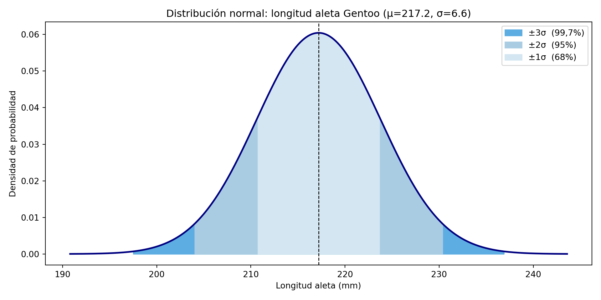
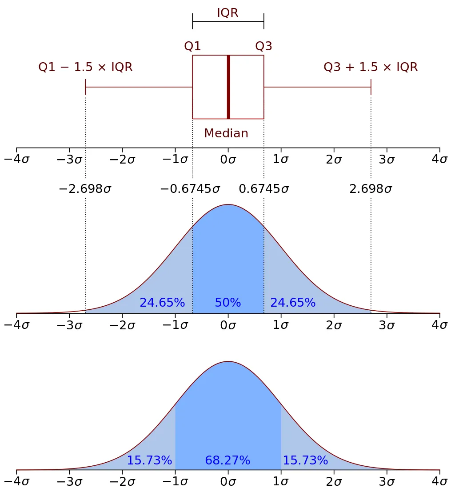
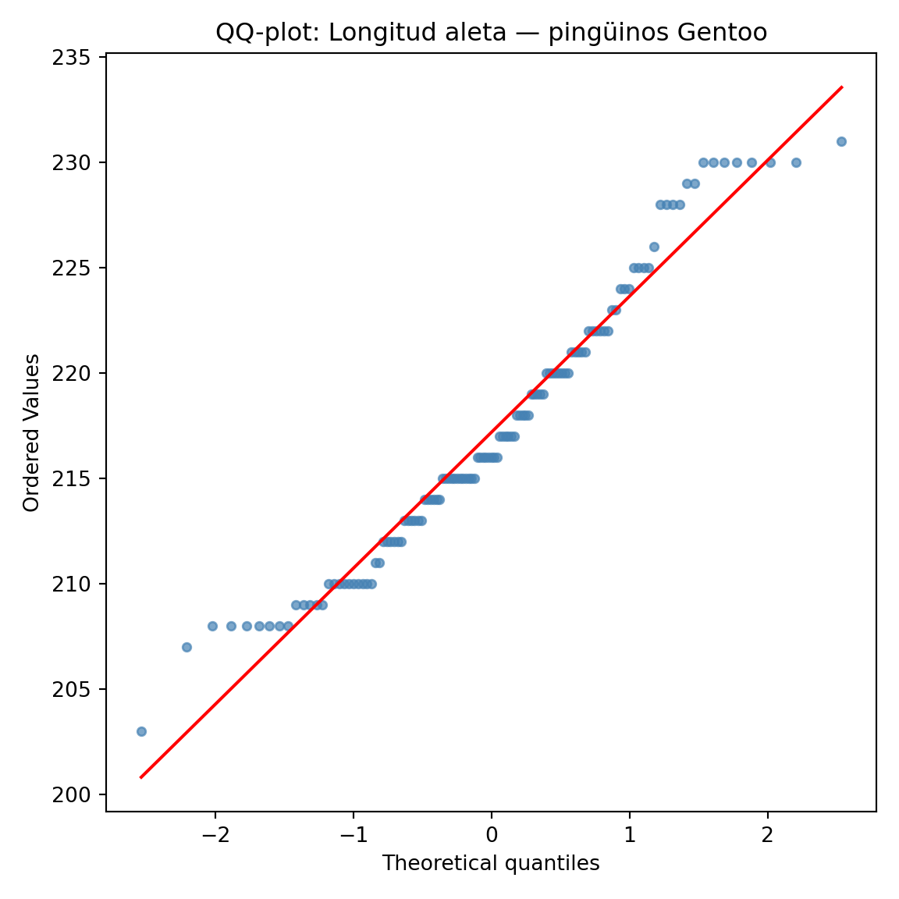

A lo largo del capítulo encontrarás bloques de código Python y R que generan los gráficos. Cuando el código es largo o utiliza funciones avanzadas de formato y visualización, aparece oculto por defecto: puedes mostrarlo haciendo clic en “Mostrar código”.
No es necesario entender cada línea para seguir el razonamiento del capítulo. Si tienes curiosidad sobre qué hace un bloque de código concreto, cópialo y pégalo en un asistente de inteligencia artificial como Gemini, ChatGPT o Claude y pregúntale: “Explícame este código línea a línea, en lenguaje sencillo”.
7.1 De la frecuencia relativa a la probabilidad
En los capítulos anteriores hemos usado el histograma para describir la distribución de los valores de una variable. Cada barra del histograma representa cuántos valores caen en un intervalo determinado. Si en lugar de contar valores contamos su proporción respecto al total, obtenemos las frecuencias relativas, que ya conocemos del capítulo 6.
Hay un paso conceptual sencillo desde las frecuencias relativas hasta la probabilidad: la frecuencia relativa de un intervalo es la probabilidad de que un valor tomado al azar de ese conjunto caiga en ese intervalo.
Por ejemplo, si en los datos de La Liga el 28% de los partidos terminan con 2 goles en total, podemos decir que la probabilidad de que un partido elegido al azar acabe con 2 goles es del 28%, o 0,28.
NotaProbabilidad y frecuencia relativa
La probabilidad de un evento es la proporción de veces que ese evento ocurre en un gran número de repeticiones. Cuando disponemos de datos reales, la frecuencia relativa observada es nuestra mejor estimación de esa probabilidad. Cuantos más datos tengamos, más fiable es esa estimación.
Para precisar la distinción entre los dos conceptos, la tabla siguiente resume sus diferencias:
Frecuencia relativa
Probabilidad
Qué es
Proporción observada en un conjunto de datos reales
Medida teórica basada en un modelo o supuesto
Cómo se obtiene
Contando: \(\frac{\text{veces que ocurre el evento}}{\text{total de observaciones}}\)
En 380 partidos de La Liga, 106 acabaron con 2 goles: frecuencia relativa = 0,279
En una moneda perfectamente equilibrada, P(cara) = 0,5
Carácter
Empírico: depende de los datos disponibles
Teórico: no requiere datos observados
Relación
Con muchos datos, la frecuencia relativa se acerca a la probabilidad teórica
En el análisis de datos industriales trabajamos casi siempre con frecuencias relativas: no conocemos la probabilidad teórica de que un queso salga fuera de especificación, pero podemos estimarla a partir de los datos históricos del proceso.
Esta conexión tiene una consecuencia práctica importante: el área bajo la curva de un histograma (o de una distribución teórica) entre dos valores es la probabilidad de que una observación caiga entre esos dos valores. Es la misma idea que la suma de frecuencias relativas acumuladas que vimos en el capítulo 6, pero expresada como área.
7.2 Distribuciones discretas y continuas
Antes de describir las formas más habituales, conviene distinguir dos tipos de variables:
Las variables discretas solo pueden tomar valores enteros: número de goles en un partido, número de colonias bacterianas en una placa, número de envases defectuosos en un lote. No tiene sentido hablar de 2,7 goles. Las distribuciones de variables discretas tienen barras separadas porque los valores posibles están separados.
Las variables continuas pueden tomar cualquier valor dentro de un rango: la materia grasa de un queso, el pH, el peso de un envase. Entre 23,5% y 23,6% de grasa hay infinitos valores posibles. Las distribuciones de variables continuas se representan con una curva continua.
En la práctica industrial, la mayoría de las variables de proceso y calidad son continuas, y la distribución normal —que veremos en detalle— es una distribución continua.
7.3 Las formas más frecuentes en datos industriales
Los datos que encontramos en la industria alimentaria no siempre tienen la misma forma. Reconocer la forma de una distribución es el primer paso para interpretarla correctamente y elegir las herramientas estadísticas adecuadas.
Veamos las cuatro formas más frecuentes usando datos que ya conocemos del libro:
library(tidyverse)library(palmerpenguins)library(patchwork)df_lla <-read_csv2("datos/laliga_resultados2425.csv",locale =locale(decimal_mark =",")) |>mutate(goles_totales = goles_local + goles_visitante)gentoo <- penguins |>filter(species =="Gentoo")p1 <-ggplot(gentoo, aes(x = flipper_length_mm)) +geom_histogram(bins =15, fill ="steelblue",color ="white", alpha =0.8) +labs(title ="Simétrica (normal)",subtitle ="Longitud aleta — pingüinos Gentoo",x ="Longitud aleta (mm)", y ="Frecuencia") +theme_bw()p2 <-ggplot(df_lla, aes(x = goles_totales)) +geom_histogram(bins =11, fill ="darkorange",color ="white", alpha =0.8) +labs(title ="Asimétrica positiva",subtitle ="Goles por partido — La Liga 2024-25",x ="Goles totales", y ="Frecuencia") +theme_bw()p3 <- penguins |>drop_na(body_mass_g) |>ggplot(aes(x = body_mass_g)) +geom_histogram(bins =20, fill ="tomato",color ="white", alpha =0.8) +labs(title ="Asimétrica positiva",subtitle ="Masa corporal — todos los pingüinos",x ="Masa corporal (g)", y ="Frecuencia") +theme_bw()p4 <- penguins |>drop_na(flipper_length_mm) |>ggplot(aes(x = flipper_length_mm, fill = species)) +geom_histogram(bins =20, alpha =0.5, position ="identity") +labs(title ="Bimodal (mezcla de grupos)",subtitle ="Longitud aleta — pingüinos",x ="Longitud aleta (mm)", y ="Frecuencia",fill ="Especie") +theme_bw() +theme(legend.position ="bottom",legend.text =element_text(size =7))(p1 + p2) / (p3 + p4)

Mostrar código
import pandas as pdimport numpy as npimport matplotlib.pyplot as pltimport seaborn as snsfrom palmerpenguins import load_penguins# Cargar datasetsurl_lla ="datos/laliga_resultados2425.csv"df_lla = pd.read_csv(url_lla, sep=';', decimal=',', encoding='ISO-8859-1')df_lla['goles_totales'] = df_lla['goles_local'] + df_lla['goles_visitante']penguins = load_penguins().dropna(subset=['flipper_length_mm', 'species', 'body_mass_g'])fig, axes = plt.subplots(2, 2, figsize=(11, 8))fig.suptitle("Cuatro formas de distribución en datos reales", fontsize=13)# 1. Normal: flipper_length Gentoogentoo = penguins[penguins['species'] =='Gentoo']['flipper_length_mm'].dropna()axes[0,0].hist(gentoo, bins=15, color='steelblue', edgecolor='white', alpha=0.8)axes[0,0].set_title("Simétrica (normal)\nLongitud aleta — pingüinos Gentoo")axes[0,0].set_xlabel("Longitud aleta (mm)")axes[0,0].set_ylabel("Frecuencia")# 2. Asimétrica positiva moderada: goles La Ligaaxes[0,1].hist(df_lla['goles_totales'], bins=range(0, 12), color='darkorange', edgecolor='white', alpha=0.8)axes[0,1].set_title("Asimétrica positiva\nGoles por partido — La Liga 2024-25")axes[0,1].set_xlabel("Goles totales")axes[0,1].set_ylabel("Frecuencia")# 3. Asimétrica positiva extrema: masa corporal pingüinos (cola derecha)# Usamos todos los pingüinos sin filtrar por especiebody = penguins['body_mass_g'].dropna()axes[1,0].hist(body, bins=20, color='tomato', edgecolor='white', alpha=0.8)axes[1,0].set_title("Asimétrica positiva\nMasa corporal — todos los pingüinos")axes[1,0].set_xlabel("Masa corporal (g)")axes[1,0].set_ylabel("Frecuencia")# 4. Bimodal: flipper length penguins por especiefor sp, color inzip(['Adelie', 'Chinstrap', 'Gentoo'], ['#1f77b4', '#ff7f0e', '#2ca02c']): datos = penguins[penguins['species'] == sp]['flipper_length_mm'] axes[1,1].hist(datos, bins=15, alpha=0.5, label=sp, color=color)axes[1,1].set_title("Bimodal (mezcla de grupos)\nLongitud aleta — pingüinos")axes[1,1].set_xlabel("Longitud aleta (mm)")axes[1,1].set_ylabel("Frecuencia")axes[1,1].legend(fontsize=8)plt.tight_layout()plt.show()

Cada una de estas formas tiene una explicación en el proceso que genera los datos:
Simétrica: los valores se distribuyen de forma equilibrada alrededor de un valor central. Es la forma que se asocia con procesos bajo control estadístico, donde las pequeñas variaciones aleatorias se compensan entre sí. La longitud de aleta de los pingüinos Gentoo es un buen ejemplo de esta forma.
Asimétrica positiva: la mayoría de los valores son bajos pero hay una cola hacia valores altos. Es típica de recuentos de eventos poco frecuentes, como los goles por partido: la mayoría de los partidos tienen pocos goles, pero alguno tiene muchos.
Asimétrica positiva extrema: versión extrema de la anterior. Los coliformes son el ejemplo perfecto: la mayoría de las muestras tienen recuentos bajos o nulos, pero episodios de contaminación producen valores muy altos. La transformación logarítmica hace visible la distribución real.
Bimodal: dos grupos superpuestos con características distintas. En los pingüinos, la mezcla de especies con diferente tamaño produce dos modas. En datos de proceso, una distribución bimodal suele indicar que hay dos máquinas, dos operarios o dos materias primas mezcladas en el mismo dataset.
7.4 La distribución normal
La distribución normal, también llamada campana de Gauss, es la más importante en estadística aplicada. No porque sea la única, sino porque muchas variables de proceso industrial se aproximan a ella cuando el proceso está bajo control, y porque es la base del cálculo de probabilidades en el control de calidad.
Su forma es característica: simétrica, con un único máximo en el centro, y colas que se extienden hacia ambos lados sin llegar nunca a cero. Está completamente definida por dos parámetros:
La media \(\mu\): determina dónde está centrada la distribución. Desplazar \(\mu\) mueve toda la curva hacia la derecha o la izquierda sin cambiar su forma.
La desviación típica \(\sigma\): determina cuán ancha o estrecha es la curva. Una \(\sigma\) pequeña produce una curva alta y estrecha (proceso preciso); una \(\sigma\) grande produce una curva baja y ancha (proceso con mucha variabilidad).
La regla 68-95-99,7
Una propiedad fundamental de la distribución normal es que la proporción de valores dentro de cada rango alrededor de la media es siempre la misma, independientemente de los valores concretos de \(\mu\) y \(\sigma\):
El 68% de los valores cae dentro de \(\mu \pm 1\sigma\)
El 95% de los valores cae dentro de \(\mu \pm 2\sigma\)
El 99,7% de los valores cae dentro de \(\mu \pm 3\sigma\)
Esta regla tiene consecuencias prácticas inmediatas: si sabemos que un proceso sigue una distribución normal con media \(\mu\) y desviación típica \(\sigma\), podemos calcular qué proporción de unidades estará fuera de cualquier límite especificado.
mu <-217.2; sigma <-6.6x <-seq(mu -4*sigma, mu +4*sigma, length.out =300)y <-dnorm(x, mu, sigma)df_n <-tibble(x = x, y = y)ggplot(df_n, aes(x, y)) +geom_area(data = df_n |>filter(x >= mu -3*sigma, x <= mu +3*sigma),fill ="#5dade2", alpha =0.4) +geom_area(data = df_n |>filter(x >= mu -2*sigma, x <= mu +2*sigma),fill ="#a9cce3", alpha =0.5) +geom_area(data = df_n |>filter(x >= mu - sigma, x <= mu + sigma),fill ="#d4e6f1", alpha =0.7) +geom_line(color ="navy", linewidth =1.5) +geom_vline(xintercept = mu, linetype ="dashed") +annotate("text", x = mu +0.2*sigma, y =max(y)*0.95,label ="μ", size =4) +annotate("text", x = mu, y =max(y)*0.5,label ="68%", size =3.5, hjust =-0.3) +annotate("text", x = mu +1.5*sigma, y =max(y)*0.2,label ="95%", size =3.5) +annotate("text", x = mu +2.5*sigma, y =max(y)*0.05,label ="99,7%", size =3.5) +labs(title =paste0("Distribución normal: longitud aleta Gentoo (μ=", mu,", σ=", sigma, ")"),x ="Longitud aleta (mm)", y ="Densidad de probabilidad") +theme_bw()

Mostrar código
import scipy.stats as stmu, sigma =217.2, 6.6# parámetros flipper_length Gentoox = np.linspace(mu -4*sigma, mu +4*sigma, 300)y = st.norm.pdf(x, mu, sigma)fig, ax = plt.subplots(figsize=(10, 5))ax.plot(x, y, color='navy', linewidth=2)# Dibujar de mayor a menor para que las zonas internas queden encimacolores = ['#5dade2', '#a9cce3', '#d4e6f1']rangos = [3, 2, 1]labels = ['±3σ (99,7%)', '±2σ (95%)', '±1σ (68%)']for r, color, label inzip(rangos, colores, labels): ax.fill_between(x, y, where=(x >= mu - r*sigma) & (x <= mu + r*sigma), color=color, label=label)ax.axvline(mu, color='black', linestyle='--', linewidth=1)ax.set_title(f"Distribución normal: longitud aleta Gentoo (μ={mu}, σ={sigma})")ax.set_xlabel("Longitud aleta (mm)")ax.set_ylabel("Densidad de probabilidad")ax.legend()plt.tight_layout()plt.show()

NotaLa regla 68-95-99,7 y el boxplot
¿Recuerdas el boxplot del capítulo 6? En una distribución normal, los bigotes del boxplot (que se extienden hasta 1,5 veces el rango intercuartílico) capturan aproximadamente el 99,3% de los valores. Los puntos fuera de los bigotes corresponden aproximadamente al 0,7% de las observaciones, que es la región de las colas más allá de ±2,7\(\sigma\).

Relación entre la campana de Gauss y el boxplot
Tipificación y puntuación Z
Una propiedad muy útil de la distribución normal es que cualquier distribución normal, independientemente de sus valores de \(\mu\) y \(\sigma\), puede transformarse en una distribución normal estándar con media 0 y desviación típica 1. Esta transformación se llama tipificación y el valor resultante se llama puntuación Z o valor Z:
\[Z = \frac{x - \mu}{\sigma}\]
La puntuación Z indica cuántas desviaciones típicas separan un valor concreto de la media. Un valor con \(Z = 2\) está 2 desviaciones típicas por encima de la media; un valor con \(Z = -1,5\) está 1,5 desviaciones típicas por debajo.
La utilidad práctica de la tipificación es que permite calcular probabilidades para cualquier distribución normal usando una única tabla o función, sin importar las unidades ni los valores concretos de \(\mu\) y \(\sigma\). Veremos su aplicación práctica en el capítulo siguiente, cuando calculemos la proporción de envases que incumple el contenido efectivo reglamentario.
7.5 Cálculo de probabilidades con Python y R
Python y R calculan directamente la probabilidad de que un valor sea menor que un valor dado en cualquier distribución normal. No es necesario usar tablas.
La función que necesitamos es la función de distribución acumulada (cumulative distribution function, CDF): dado un valor \(x\), nos devuelve la probabilidad de que una observación sea menor o igual que \(x\), es decir, el área bajo la curva a la izquierda de ese punto.
Como ejemplo, calculamos algunas probabilidades para la longitud de aleta de los pingüinos Gentoo (aproximadamente normal con media 217,2 mm y desviación típica 6,6 mm):
P(210 mm < longitud aleta < 225 mm) = 0.7437 = 74.37%
La función norm.cdf en Python y pnorm en R calculan el área bajo la curva a la izquierda del valor indicado. Para probabilidades hacia la derecha (valores superiores a \(x\)) basta con restar a 1. Para probabilidades en un intervalo, se restan las dos CDF de los extremos.
7.6 Comprobación de normalidad: el QQ-plot
Antes de aplicar cualquier cálculo basado en la distribución normal, es conveniente comprobar si los datos se ajustan razonablemente bien a esa distribución. El gráfico más sencillo y más informativo para esta comprobación es el QQ-plot (quantile-quantile plot).
La idea es simple: si los datos siguen una distribución normal, sus cuantiles empíricos (los valores observados ordenados de menor a mayor) deberían coincidir con los cuantiles teóricos de una distribución normal. El QQ-plot representa estos dos conjuntos de cuantiles uno frente al otro: si los puntos siguen una línea recta, los datos son aproximadamente normales; si se desvían de la línea, hay indicios de no normalidad.
Aplicamos el QQ-plot a la longitud de aleta de los pingüinos Gentoo, que acabamos de ver que sigue una distribución aproximadamente normal:
import scipy.stats as stgentoo_flip = penguins[penguins['species'] =='Gentoo']['flipper_length_mm'].dropna()fig, ax = plt.subplots(figsize=(6, 6))_ = st.probplot(gentoo_flip, dist="norm", plot=ax) # _ evita que se imprima la salida numérica_ = ax.set_title("QQ-plot: Longitud aleta — pingüinos Gentoo")_ = ax.get_lines()[0].set(color='steelblue', markersize=4, alpha=0.7)_ = ax.get_lines()[1].set(color='red', linewidth=1.5)plt.tight_layout()plt.show()

La mayoría de los puntos siguen la línea roja con bastante fidelidad, lo que confirma que la longitud de aleta de los pingüinos Gentoo sigue una distribución aproximadamente normal. Los puntos en los extremos se ajustan bien a la línea, sin separaciones llamativas, lo que indica que no hay valores atípicos importantes ni asimetría pronunciada.
NotaCómo interpretar un QQ-plot
Puntos sobre la línea recta: los datos se ajustan bien a la distribución normal.
Cola superior por encima de la línea: hay valores altos más extremos de lo esperado (cola derecha más pesada, asimetría positiva).
Cola inferior por debajo de la línea: hay valores bajos más extremos de lo esperado (cola izquierda más pesada, asimetría negativa).
Forma en S: la distribución tiene colas más ligeras que la normal (más concentrada en el centro).
Punto aislado en un extremo: un outlier.
7.7 Resumen del capítulo
Este capítulo ha establecido el puente entre las frecuencias relativas del histograma y el concepto de probabilidad: la proporción de valores en un intervalo es la probabilidad de que una observación caiga en ese intervalo. A partir de esta idea, la distribución normal aparece como el modelo teórico que describe el comportamiento de muchas variables industriales bajo control.
Los cuatro tipos de distribución ilustrados con datos del libro —simétrica, asimétrica positiva, asimétrica positiva extrema y bimodal— permiten al alumno reconocer en sus propios datos la forma que subyace al proceso que los genera. La distribución normal se ha descrito en profundidad mediante sus parámetros \(\mu\) y \(\sigma\), la regla 68-95-99,7 y el cálculo de probabilidades con Python y R. El QQ-plot proporciona una herramienta visual sencilla para verificar si la hipótesis de normalidad es razonable antes de aplicar estos cálculos. En capítulos posteriores aplicaremos estas mismas herramientas a variables de proceso real como la materia grasa del queso o el peso de envases de yogur.
En el capítulo dedicado al contenido efectivo de envases aplicaremos estos conceptos a un problema real de control de calidad: el análisis del llenado de yogures según el RD 1801/2008.